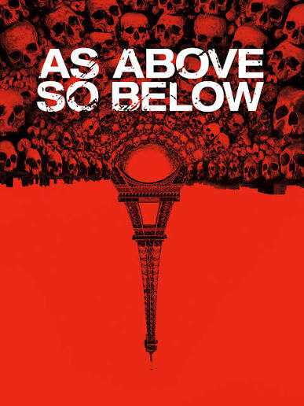
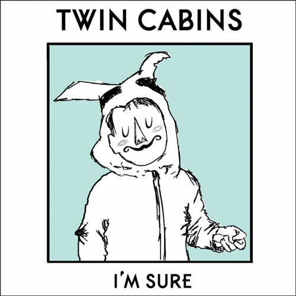
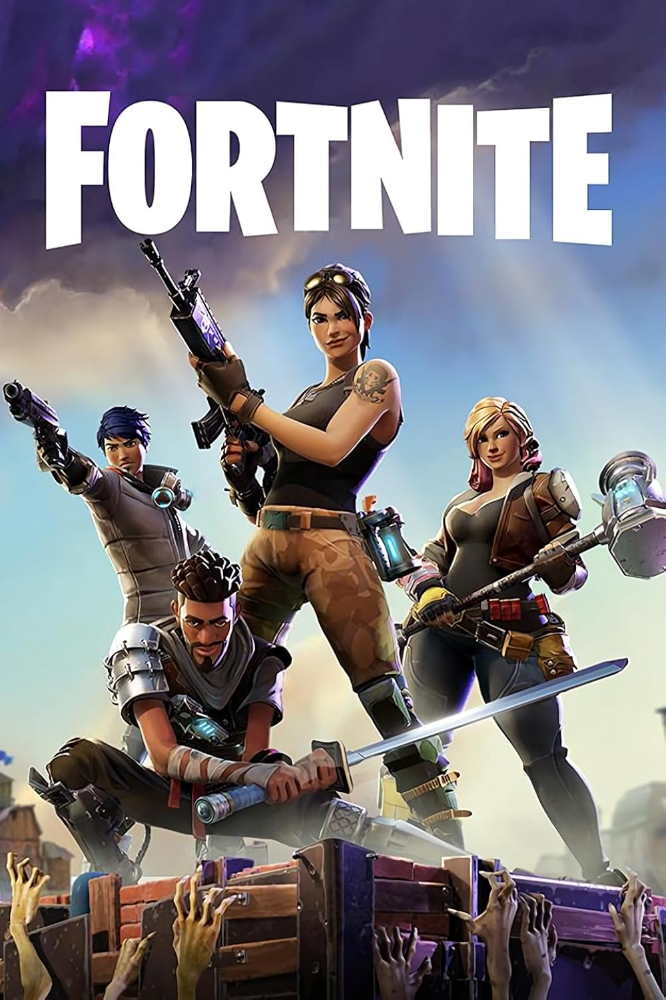
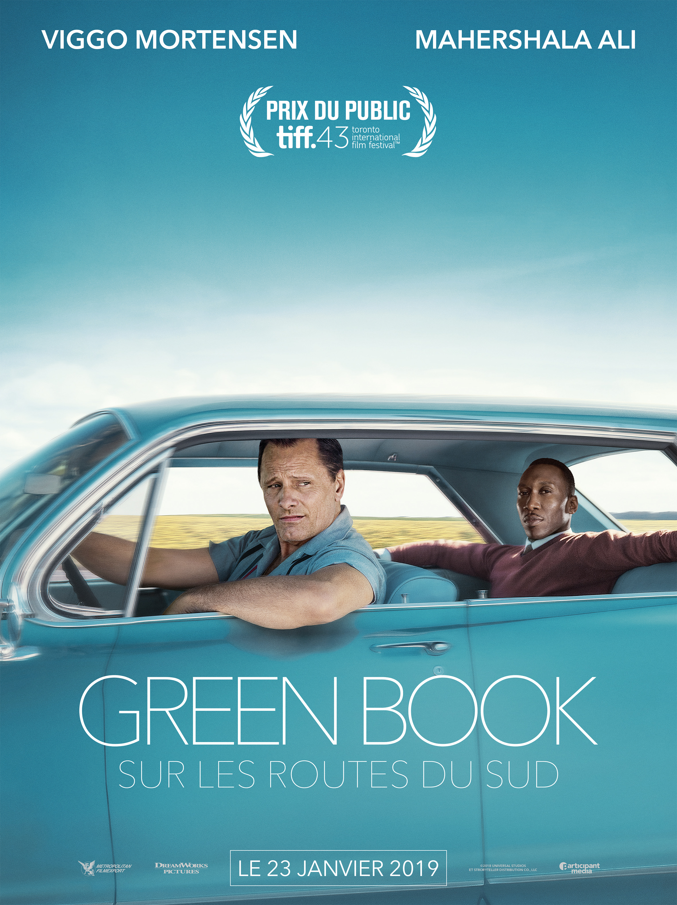
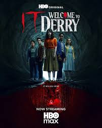
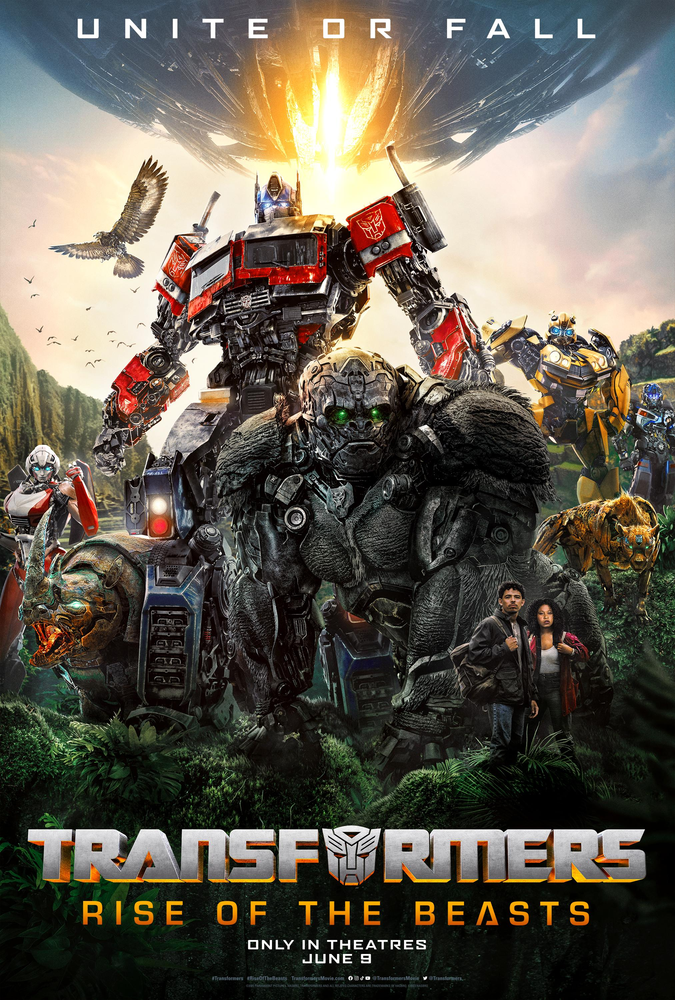
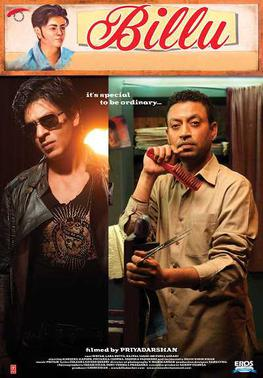
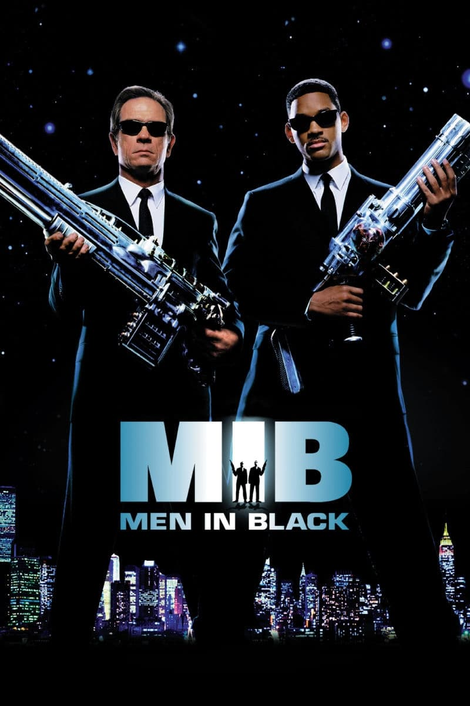

-

As Above, So Below
Genuinely like goated shit man,it invloves paris the catacombs and shit includes greek mythology and shi, its like a must must watch,its found footage so its like a horror movie but its like a thriller and shit,its like a must watch for sure like its so peak makes me feel like ahhhhhhh dark night 2 am sourdough pizza long weekend desrerts and imported cherry vanilla coke bruh imma cry so peakkk. aint gonna lie it doesnt have a storyline that makes sense but the vibe and how it keeps you attached and at the edge is like so peak...
.Directed by (2014) was directed by John Erick Dowdle
My rating: ⭐⭐⭐⭐⭐ shit like peak tbh
-

The Last of Us
to be honest according to me this is the most peak game you will play!!!, not the movie the gameee okkay!!! , people shit a lot on the 2nd part but according to me the 2nd part is peak as well, but the first part is like a must play it just gives such an errie vibe man this game like its so comforting everything from the soundtrack to the little visuals this game made such a deep impact on me and i will never forget it, like the first time i played it i was like 12 or 13 and it was like a peak experience for me and man i was so like this was the only thing in my mind the zombies, ellies persona, who is right who is wrong man like!!
Made by Naughty Dog
My rating: cant be rated its like a million out of 10 its like so fucking peak, played it on my ps4 and it was the best
-

Twins Cabin Swing Lynn
like man is anything even peaker than this song, genuinely it makes me feel things that i have never ever felt love,sadness,hope,anger,cursioity all at the same time like its so depressing and cheeerful at the same time it is so nostalgic in its true essence makes me wonder man like shit.
made by harmless
My rating: 10 stars make me feels things i never knew i can feel...
-

Fortnite
MAN ITS LIKE bruh 2022 lockdown season 5 fortnite baby yoda mandolrain the predator seaosn with the preadtor movie the royal familys farhans fortnite videos my first victory royale, the chug song slurp slurp, iamm on a payphone trynaa call;llll you on alexa, home alone vibing!!!.
Made ByEpic games
My rating: it was not even the game, it was the friends along with the vibe the lockdown its like gamw 8/10, experience 10000/10
-

Green Book
its genunely so peakkk man, started watching this movie from shorts like him eating the chiken therowing it outta the car and mannn, shit was peak unity among diversity kinda shit..
Directed by Peter Farrelly
My rating: ⭐⭐⭐⭐honestly peak but not that great the time i watched at it was peak thoguh
-

It welcome to derry
ITSSS SO PEAKKKK, it aint gonna lie tbh i thought this is gonna be mid from the first episode, but it was final exam season and this was such an escape for me just chilling and wacthing theories shorts the music the vice was like 10/10.
Directed by PENNNYWISE,THOSE WHO KNOW 💀
My rating: ⭐⭐⭐⭐⭐ SAVED ME DURING BOARDS.
-

Transformers
WATXH IT ASAP, I SAID WATCHHHHH IT , NO PARTS SKIPPED IN CHRONOLOGICALORDER, PRIME MEGAN FOX PYRAMIUDS, CARS , DECEPTICONS, AUTOBOTS, OPTIMUS PRIME, MEGATRON, BUMBLEBEE, THE MUSIC THE VIBE THE STORY EVERYTHING IS SO PEAK ALONG WITH VANILLA COKE AND SOURDOUGH PIZZA, ITS LIKE A MUST WATCH MAN AND THE STAR PROEJCTOR ON THE ROOOOOFFFFFF
Directed by many many directors but og micheal bay
My rating: 10/10 just perfect man.
-

Billu
ANOTHER IFRAN KHAN MOVIE, this movie is like a peak man, it makes me feel things that i have never felt before, the music the vibe the story the acting everything is so peak man, it makes me feel like ahhhhhh LIKE GENUNELY SO PEAKKKKKKKKKKKKK, SRK CAMEOS AND THE MUSIC IS LIKE SO PEAK.
Directed by Priyadarshan
My rating: 10/1000000
-

Men in Black
After a police chase with an otherworldly being, a New York City cop is recruited as an agent in a top-secret organization established to monitor and police alien activity on Earth: the Men in Black. Agent K and new recruit Agent J find themselves in the middle of a deadly plot by an intergalactic terrorist who has arrived on Earth to assassinate two ambassadors from opposing galaxies LIKE YOU SEEE HOW COOOOL THIS SHIT IS 1!!!!!!! WROTE THE ACTUAL DEPSO ON THIS ONE SO YOU' ACTUALLY WATCH IT INSTEAD OF READING MY BULLSHIT ON THE OTHER ONES.
Directed by Barry Sonnenfeld
My rating: CASNT BE RATED ITS LIKE IN MY HEART. ITS A ORGAN FOR ME;